EXAMPLES of Relative Population Curves in "Population Power Curves in
ASCA with Permutation Testing". Submitted to the Special Issue in honor of Prof. Age Smilde in his retirement.
coded by: Jose Camacho Paez (josecamacho@ugr.es) Michael Sorochan Armstorng (mdarmstr@ugr.es) last modification: 19/Jul/2024
Copyright (C) 2024 University of Granada, Granada
This program is free software: you can redistribute it and/or modify it under the terms of the GNU General Public License as published by the Free Software Foundation, either version 3 of the License, or (at your option) any later version.
This program is distributed in the hope that it will be useful, but WITHOUT ANY WARRANTY; without even the implied warranty of MERCHANTABILITY or FITNESS FOR A PARTICULAR PURPOSE. See the GNU General Public License for more details.
You should have received a copy of the GNU General Public License along with this program. If not, see http://www.gnu.org/licenses/.
Contents
- Relative Population Curves (type 1) from variance coefficients. The design
- Relative Population Power Curves (type 1) from variance coefficients. The design
- Relative Population Power Curves (type 1) from variance coefficients. The design
- Relative Population Power Curves (type 1) from variance coefficients. The design
- Relative Population Power Curves (type 1) from variance coefficients. The design
- Relative Population Power Curves (type 1) from variance coefficients. The design
- Relative Population Power Curves (type 1) from variance coefficients. The design
- Relative Population Power Curves (type 1) from variance coefficients. The design
- Relative Population Curves (type 1) from variance coefficients. The design
- Draw expected F-ratio for the design matrix F containing a full
Relative Population Curves (type 1) from variance coefficients. The design
matrix F contains a full factorial design with four levels for A, three levels for B and four individuals in each cell of C(A). Other inputs are M = 400, kA = kB = kC(A) = kAB = 0.2 and kE = 1, R = 1000, P = 200, delta = 0.1 and alpha = 0.05.
clear close all clc reps = 4; levels = {[1,2,3,4],[1,2,3],1:reps}; F = create_design(levels,1); X.N = size(F,1); X.M = 400; X.k = [.2,.2,.2,.2]; rep = 1000; % Power curves [PCmean,PCrep,struct] = powercurve(X,F,{[1 2]},1,rep,[],@()1,[],.05,1,200,2,[],[],[],[1 3]); legend('A','B','C(A)','AB') hold on, plot([0.5 0.5],[0 1],'--r','LineWidth',2) saveas(gcf,'./Figures/SPC1_1'); saveas(gcf,'./Figures/SPC1_1.eps','epsc'); theta = 0:0.1:1; for r=1:rep for t=1:length(theta) a = struct.T{r,t}{2:5,6}; f(t,:,r) = a; end end mf = mean(f,3); fig_h = plot_vec(mf(1:10,:),theta(1:10),[],{'Effect size (\theta)','Mean F-ratio'},[],0) saveas(gcf,'./Figures/Freal'); saveas(gcf,'./Figures/Freal.eps','epsc'); save ej1_1
fig_h =
Figure (2) with properties:
Number: 2
Name: ''
Color: [0.9400 0.9400 0.9400]
Position: [1000 918 560 420]
Units: 'pixels'
Use GET to show all properties
Warning: Figure is saved in ej1_1.mat. Saving graphics handle variables can
cause the creation of very large files. To save graphics figures, use <a
href="matlab:helpview([docroot,'/techdoc/ref/savefig.html'])">savefig</a>.
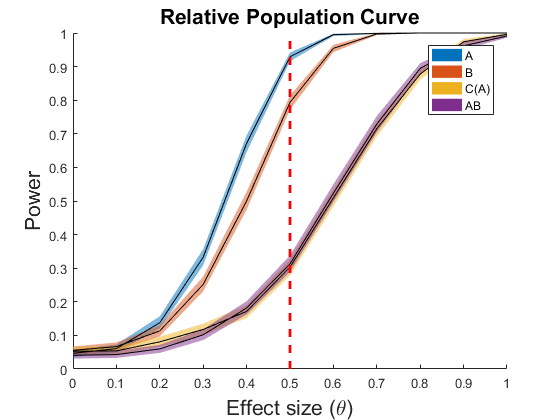 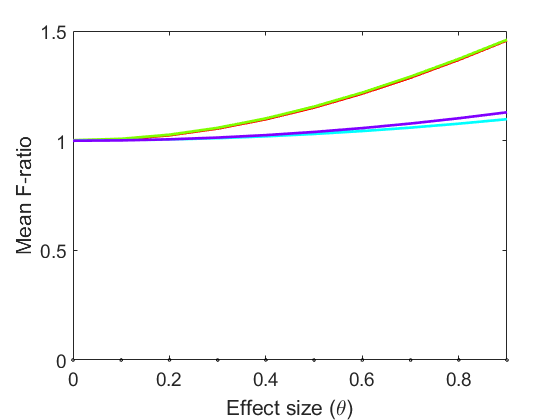 Relative Population Power Curves (type 1) from variance coefficients. The design
matrix F contains a full factorial design with four levels for A, three levels for B and four individuals in each cell of C(A). Other inputs are M = 400, kB = kC(A) = kAB = 0.2, kA = 0 and kE = 1, R = 1000, P = 200, delta = 0.1 and alpha = 0.05.
X.k = [0,.2,.2,.2]; % Power curves [PCmean,PCrep,struct] = powercurve(X,F,{[1 2]},1,rep,[],@()1,[],.05,1,200,2,[],[],[],[1 3]); legend('A','B','C(A)','AB') saveas(gcf,'./Figures/SPC1_2'); saveas(gcf,'./Figures/SPC1_2.eps','epsc'); theta = 0:0.1:1; for r=1:rep for t=1:length(theta) a = struct.T{r,t}{2:5,6}; f(t,:,r) = a; end end mf = mean(f,3); figure(fig_h), hold on, plot(theta(1:10),mf(1:10,1)) saveas(gcf,'./Figures/Freal'); saveas(gcf,'./Figures/Freal.eps','epsc'); save ej1_2
Warning: Figure is saved in ej1_2.mat. Saving graphics handle variables can cause the creation of very large files. To save graphics figures, use <a href="matlab:helpview([docroot,'/techdoc/ref/savefig.html'])">savefig</a>.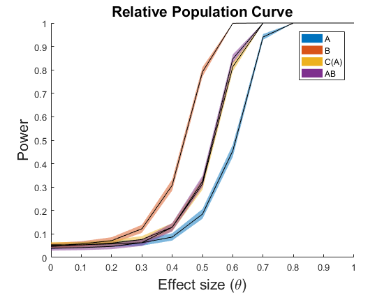 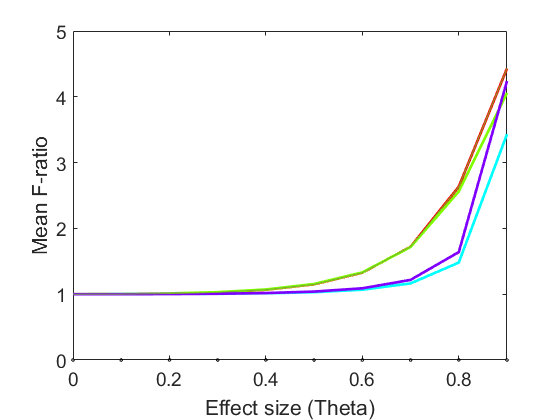
Relative Population Power Curves (type 1) from variance coefficients. The design
matrix F contains a full factorial design with four levels for A, three levels for B and four individuals in each cell of C(A). Other inputs are M = 400, kA = kC(A) = kAB = 0.2, kB = 0 and kE = 1, R = 1000, P = 200, delta = 0.1 and alpha = 0.05.
X.k = [.2,0,.2,.2]; % Power curves [PCmean,PCrep,struct] = powercurve(X,F,{[1 2]},1,rep,[],@()1,[],.05,1,200,2,[],[],[],[1 3]); legend('A','B','C(A)','AB') saveas(gcf,'./Figures/SPC1_3'); saveas(gcf,'./Figures/SPC1_3.eps','epsc'); theta = 0:0.1:1; for r=1:rep for t=1:length(theta) a = struct.T{r,t}{2:5,6}; f(t,:,r) = a; end end mf = mean(f,3); hold on, plot(theta(1:10),mf(1:10,2)) figure(fig_h), hold on, plot(theta(1:10),mf(1:10,2)) saveas(gcf,'./Figures/Freal'); saveas(gcf,'./Figures/Freal.eps','epsc'); legend('A','B','C(A)','AB','A=0','B=0','Location','NorthWest') save ej1_3
Warning: Figure is saved in ej1_3.mat. Saving graphics handle variables can cause the creation of very large files. To save graphics figures, use <a href="matlab:helpview([docroot,'/techdoc/ref/savefig.html'])">savefig</a>.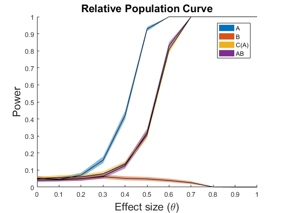 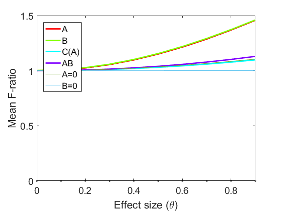
Relative Population Power Curves (type 1) from variance coefficients. The design
matrix F contains a full factorial design with four levels for A, three levels for B and four individuals in each cell of C(A). Other inputs are M = 400, kA = kB = kAB = 0.2, kC(A) = 0 and kE = 1, R = 1000, P = 200, delta = 0.1 and alpha = 0.05.
X.k = [.2,.2,0,.2]; % Power curves [PCmean,PCrep] = powercurve(X,F,{[1 2]},1,rep,[],@()1,[],.05,1,200,2,[],[],[],[1 3]); legend('A','B','C(A)','AB') saveas(gcf,'./Figures/SPC1_4'); saveas(gcf,'./Figures/SPC1_4.eps','epsc'); save ej1_4
Warning: Figure is saved in ej1_4.mat. Saving graphics handle variables can cause the creation of very large files. To save graphics figures, use <a href="matlab:helpview([docroot,'/techdoc/ref/savefig.html'])">savefig</a>.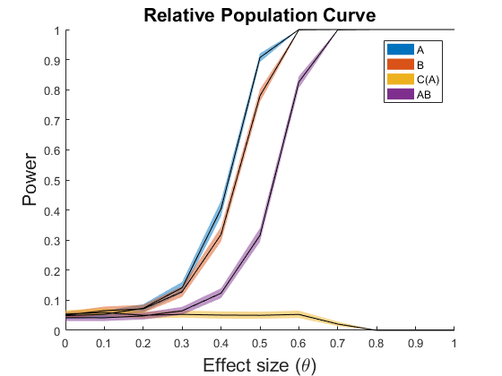
Relative Population Power Curves (type 1) from variance coefficients. The design
matrix F contains a full factorial design with four levels for A, three levels for B and four individuals in each cell of C(A). Other inputs are M = 400, kA = kB = kC(A) = 0.2, kAB = 0 and kE = 1, R = 1000, P = 200, delta = 0.1 and alpha = 0.05.
X.k = [.2,.2,.2,0]; % Power curves [PCmean,PCrep] = powercurve(X,F,{[1 2]},1,rep,[],@()1,[],.05,1,200,2,[],[],[],[1 3]); legend('A','B','C(A)','AB') saveas(gcf,'./Figures/SPC1_5'); saveas(gcf,'./Figures/SPC1_5.eps','epsc'); save ej1_5
Warning: Figure is saved in ej1_5.mat. Saving graphics handle variables can cause the creation of very large files. To save graphics figures, use <a href="matlab:helpview([docroot,'/techdoc/ref/savefig.html'])">savefig</a>.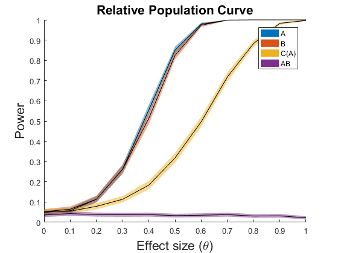
Relative Population Power Curves (type 1) from variance coefficients. The design
matrix F contains a full factorial design with four levels for A, three levels for B and four individuals in each cell of C(A). Other inputs are M = 400, kA = kB = 0.2, kAB = kC(A) = 0 and kE = 1, R = 1000, P = 200, delta = 0.1 and alpha = 0.05.
X.k = [.2,.2,0,0]; % Power curves [PCmean,PCrep] = powercurve(X,F,{[1 2]},1,rep,[],@()1,[],.05,1,200,2,[],[],[],[1 3]); legend('A','B','C(A)','AB') saveas(gcf,'./Figures/SPC1_6'); saveas(gcf,'./Figures/SPC1_6.eps','epsc'); save ej1_6
Warning: Figure is saved in ej1_6.mat. Saving graphics handle variables can cause the creation of very large files. To save graphics figures, use <a href="matlab:helpview([docroot,'/techdoc/ref/savefig.html'])">savefig</a>.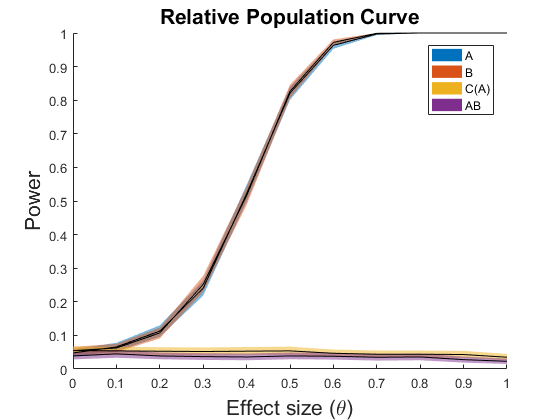
Relative Population Power Curves (type 1) from variance coefficients. The design
matrix F contains a full factorial design with four levels for A, three levels for B and four individuals in each cell of C(A). Other inputs are M = 400, kB = kAB = 0.2, kA = kC(A) = 0 and kE = 1, R = 1000, P = 200, delta = 0.1 and alpha = 0.05.
X.k = [0,.2,0,.2]; % Power curves [PCmean,PCrep] = powercurve(X,F,{[1 2]},1,rep,[],@()1,[],.05,1,200,2,[],[],[],[1 3]); legend('A','B','C(A)','AB') saveas(gcf,'./Figures/SPC1_7'); saveas(gcf,'./Figures/SPC1_7.eps','epsc'); save ej1_7
Warning: Figure is saved in ej1_7.mat. Saving graphics handle variables can cause the creation of very large files. To save graphics figures, use <a href="matlab:helpview([docroot,'/techdoc/ref/savefig.html'])">savefig</a>.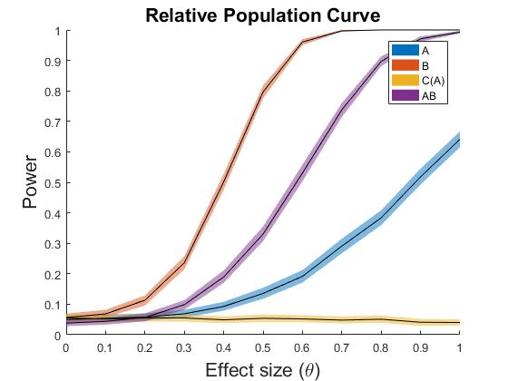
Relative Population Power Curves (type 1) from variance coefficients. The design
matrix F contains a full factorial design with four levels for A, three levels for B and four individuals in each cell of C(A). Other inputs are M = 400, kB = kC(A) = 0.2, kA = kAB = 0 and kE = 1, R = 1000, P = 200, delta = 0.1 and alpha = 0.05.
X.k = [0,.2,.2,0]; % Power curves [PCmean,PCrep] = powercurve(X,F,{[1 2]},1,rep,[],@()1,[],.05,1,200,2,[],[],[],[1 3]); legend('A','B','C(A)','AB') saveas(gcf,'./Figures/SPC1_8'); saveas(gcf,'./Figures/SPC1_8.eps','epsc'); save ej1_8
Warning: Figure is saved in ej1_8.mat. Saving graphics handle variables can cause the creation of very large files. To save graphics figures, use <a href="matlab:helpview([docroot,'/techdoc/ref/savefig.html'])">savefig</a>.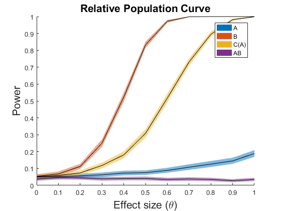
Relative Population Curves (type 1) from variance coefficients. The design
matrix F contains a full factorial design with four levels for A and three levels. Other inputs are M = 400, kB = kAB = 0.2, kA = 0 and kE = 1, R = 1000, P = 200, delta = 0.1 and alpha = 0.05.
clear close all clc reps = 4; levels = {[1,2,3,4],[1,2,3],1:reps}; F = create_design(levels(:,1:2),4); X.N = size(F,1); X.M = 400; X.k = [0,.2,.2]; rep = 1000; % Power curves [PCmean,PCrep] = powercurve(X,F,{[1 2]},1,rep,[],@()1,[],.05,1,200,2); legend('A','B','AB') saveas(gcf,'./Figures/SPC1_9'); saveas(gcf,'./Figures/SPC1_9.eps','epsc'); save ej1_9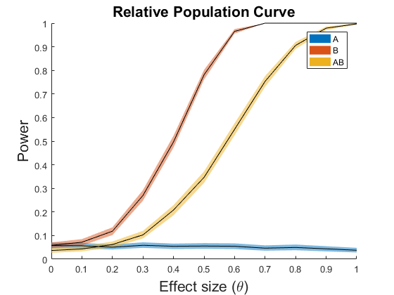
Draw expected F-ratio for the design matrix F containing a full
factorial design with four levels for A, three levels for B and four individuals in each cell of C(A). Other inputs are M = 400, kA = kB = kC(A) = kAB = 0.2 and kE = 1, and delta = 0.1.
theta = 0:0.1:0.9;
EFA = 6*(1 + 0.76*(theta).^2)./(4*(1+0.12*(theta).^2) + 2*(1+0.16*(theta).^2));
EFB = 1 + (0.64*theta.^2)./(1 + 0.16*theta.^2);
EFCA = 1 + (0.12*theta.^2);
EFAB = 1 + (0.16*theta.^2);
EFA2 = 6*(1 + 0.28*(theta).^2)./(4*(1+0.12*(theta).^2) + 2*(1+0.16*(theta).^2));
EFB2 = ones(size(theta));
comb = [EFA' EFB' EFCA' EFAB' EFA2' EFB2'];
plot_vec(comb,theta,[],{'Effect size (\theta)','Expected F-ratio'},[],0); % complete call
legend('A','B','C(A)','AB','A=0','B=0','Location','NorthWest')
saveas(gcf,'./Figures/Fest'); saveas(gcf,'./Figures/Fest.eps','epsc');
save ej1F_est
Warning: Figure is saved in ej1F_est.mat. Saving graphics handle variables can cause the creation of very large files. To save graphics figures, use <a href="matlab:helpview([docroot,'/techdoc/ref/savefig.html'])">savefig</a>.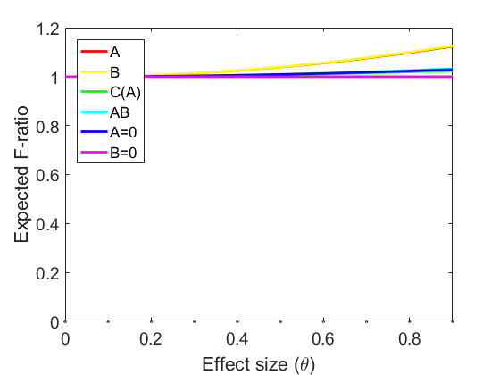